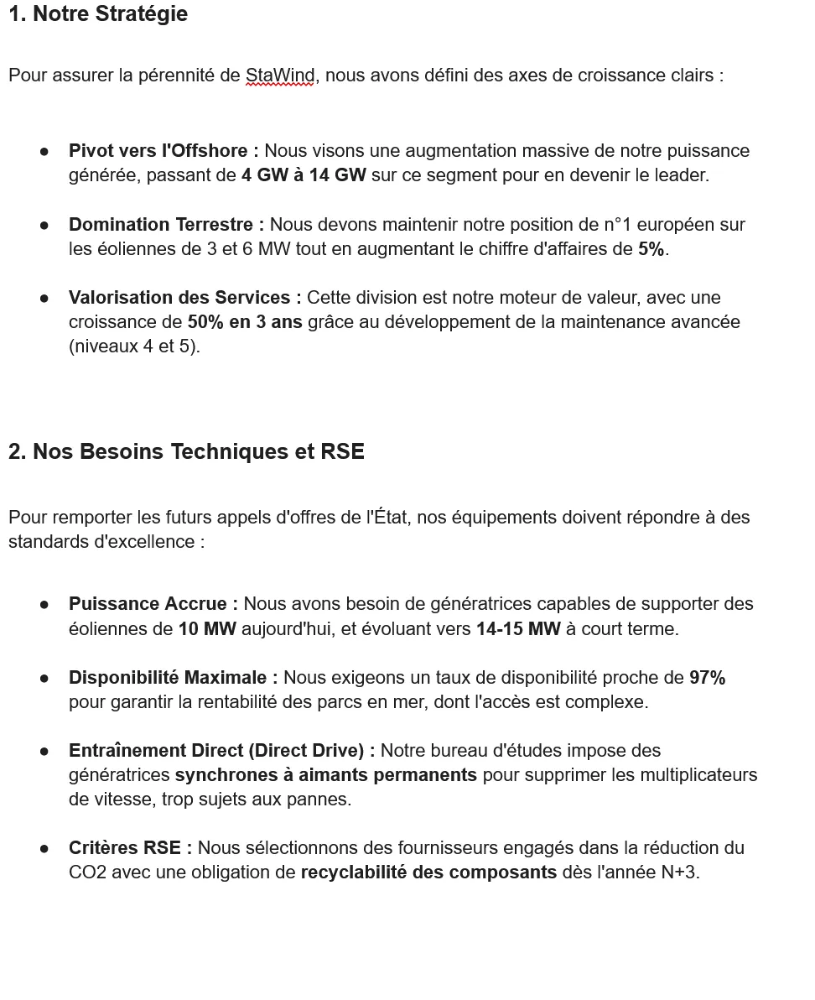
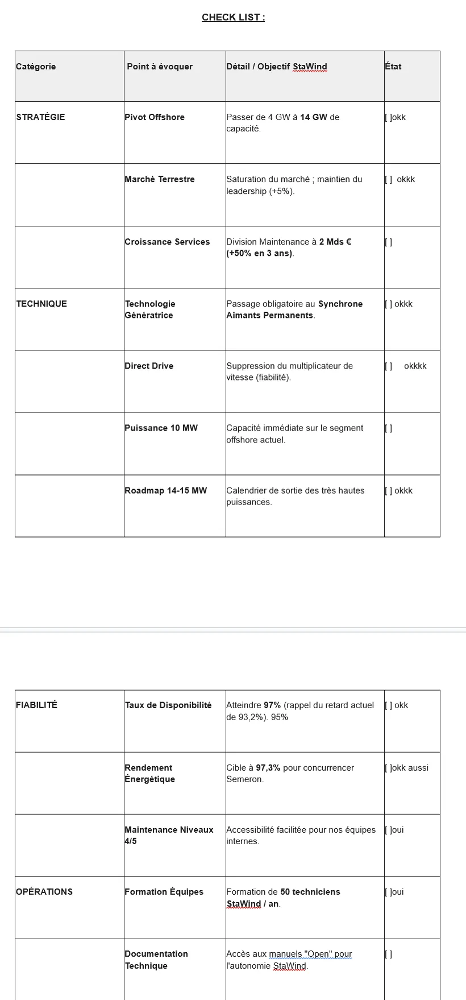

Tim Agoune
Tim Agoune01Objectif
Préparer et mener un entretien de négociation en face à face, de la préparation en amont jusqu'au devis final.
02Démarche
J'ai mené ces simulations de bout en bout en binôme, avec leurs livrables. J'en retiens que la négociation repose avant tout sur la préparation : la matrice achat permet d'anticiper la position de l'autre, et le devis ajustable permet de le faire évoluer pendant l'entretien.
Le cas le plus complet est la négociation « StaWind », un fabricant d'éoliennes qui développe son activité en mer, pour lequel j'ai tenu le rôle de l'acheteur face à un fournisseur de génératrices. La préparation couvrait la stratégie de l'entreprise, ses besoins techniques et une check-list d'objectifs à cocher pendant l'entretien : volumes, prix, SAV, critères RSE.


03Moyens et outils
- Guides d'entretien rédigés pour chaque rôle ;
- matrices achat / vente formalisées ;
- grille SONCASE pour relier arguments et motivations ;
- fiches techniques produits pour maîtriser l'objet de la vente ;
- devis dynamique ajustable en cours de négociation.